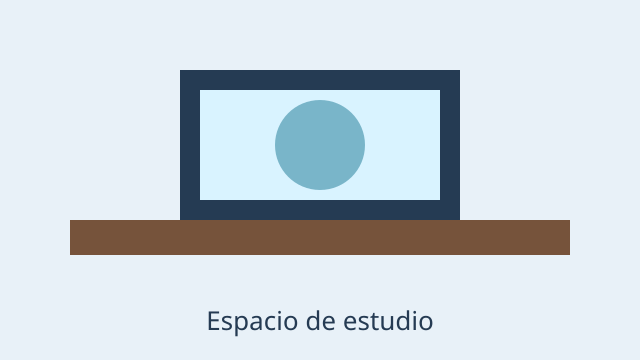
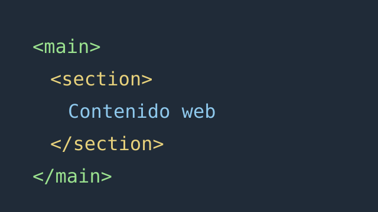

Temas que me interesan
- Desarrollo de software
- Inteligencia artificial
- Accesibilidad web
Un espacio para conocer mi proceso de formación como futuro profesional.
Mi nombre es Estudiante de Fundamentos Web y estudio Ingeniería de Sistemas.
Actualmente curso Fundamentos Web y practico la creación de documentos accesibles.
Estoy aprendiendo HTML.
Una meta anterior era memorizar todas las etiquetas; la meta actual es comprender cuándo usar cada elemento.
Una expresión matemática puede escribirse como x2 y la fórmula del agua como H2O.
La estructura y el significado son la prioridad de este taller.
“The power of the Web is in its universality.”
Fuente: Tim Berners-Lee, W3C


Diferencia: video reproduce un archivo multimedia controlado por la página, mientras iframe incrusta otro documento o servicio externo.
| Asignatura | Día | Hora | Modalidad |
|---|---|---|---|
| Fundamentos Web | Lunes | 6:00 p. m. | Virtual |
| Programación | Martes | 4:00 p. m. | Presencial |
| Bases de datos | Miércoles | 6:00 p. m. | Virtual |
| Matemáticas | Jueves | 2:00 p. m. | Presencial |
| Ingeniería de software | Viernes | 4:00 p. m. | Presencial |
Estoy aprendiendo a organizar documentos HTML con significado semántico.
Avance del taller:
Dominio estimado:
<h1>Hola mundo</h1>Para guardar el archivo puedo utilizar Ctrl + S.
Última revisión: .